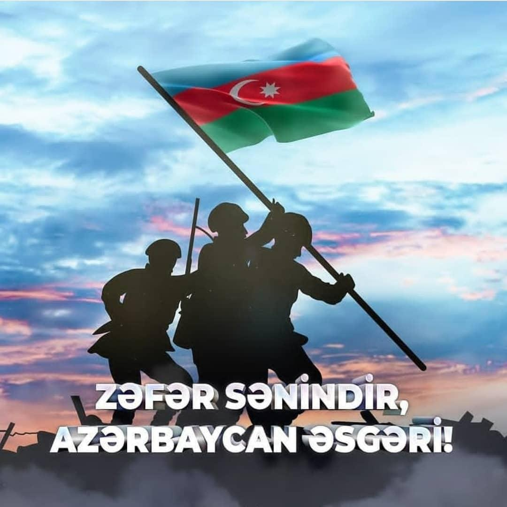

Zəfər Günü
Zəfər Günü — Azərbaycan Respublikasında İkinci Qarabağ müharibəsində qələbə şərəfinə qeyd edilən gün. Prezident İlham Əliyevin 2020-ci il dekabrın 3-də imzaladığı "Azərbaycan Respublikasında Zəfər Gününün təsis edilməsi haqqında" sərəncama əsasən qeyd edilir. 27 sentyabr 2020-ci il səhər saatlarında Ermənistan Silahlı Qüvvələrinin genişmiqyaslı təxribat törədərək cəbhəboyu zonada yerləşən Azərbaycan ordusunun mövqelərini və yaşayış məntəqələrini iriçaplı silahlar, minaatanlar və müxtəlif çaplı artilleriya qurğularından intensiv atəşə tutması nəticəsində, Ermənistan ordusunun döyüş aktivliyinin qarşısını almaq, mülki əhalinin təhlükəsizliyini təmin etmək məqsədilə Azərbaycan ordusunun komandanlığı tərəfindən qoşunların bütün cəbhə boyu sürətli əks-hücum əməliyyatı başlaması barədə qərar verilmişdir.[3][4][5] Qarşıdurmalar nəticəsində Ermənistanda hərbi vəziyyət və ümumi səfərbərlik,[6][7] Azərbaycanda isə hərbi vəziyyət və komendant saatı,[8] 28 sentyabrda qismən səfərbərlik elan edilmişdir.[9] Qarşıdurmalar qısa müddətdə sürətlə alovlanmış və İkinci Qarabağ müharibəsinə çevrilmişdir.[10] Ermənistan respublikası ilə 44 gün davam edən müharibə ərzində 4 oktyabrda Cəbrayıl,[11][12] 17 oktyabrda Füzuli,[13][14] 20 oktyabrda Zəngilan,[15][16] 25 oktyabrda Qubadlı[17][18] və 8 noyabrda Şuşa şəhəri işğaldan azad edilmişdir.[19][20][21] Moskvada imzalanan müqaviləyə əsasən, noyabrın 10-u Bakı vaxtı ilə saat 01:00-dan etibarən Dağlıq Qarabağ münaqişəsi zonasında atəşin və hərbi əməliyyatların tam dayandırılması, 1 dekabradək Ermənistan qüvvələrinin Dağlıq Qarabağın ətrafında Ermənistan nəzarətindəki Azərbaycan ərazilərindən çıxarılması və Naxçıvan Muxtar Respublikası ilə Azərbaycanın qərb rayonlarını birləşdirən yeni nəqliyyat kommunikasiyalarının inşasının təmin edilməsi elan edilmişdir.[22] 2020-ci il noyabrın 20-də Ağdam,[23] noyabrın 25-də Kəlbəcər,[23] dekabrın 1-də Laçın rayonları[24] azad edilmişdir. Azərbaycanda Zəfər Gününün təsis edilməsi haqda prezidentin ilk fərmanı dekabrın 2-də verilmişdi. Bu sərəncama əsasən Zəfər Günü hər il noyabrın 10-da keçirilməli idi.[25] Lakin dekabrın 3-də noyabrın 10-nun Türkiyədə Mustafa Kamal Atatürkün anım günü olduğunu nəzərə alaraq, Azərbaycan Respublikasının Prezidenti cənab İlham Əliyev Zəfər Gününün tarixinin dəyişdirilməsi barədə qərar qəbul etmişdir.[26] Şuşa şəhərinin və onun işğaldan azad edilməsinin tarixi əhəmiyyəti nəzərə alınaraq qələbə - Zəfər Günü hər il noyabrın 8-də təntənəli şəkildə qeyd edilməsi qərara alınmışdır.